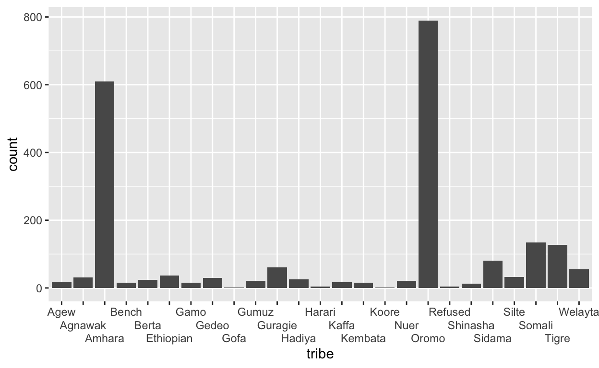
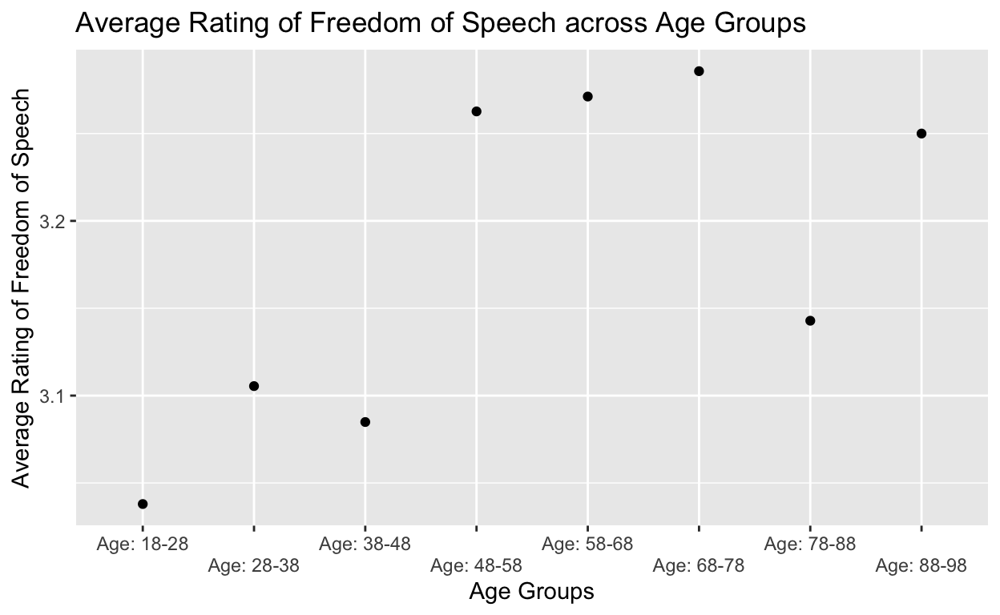

Milestone 2
Do factors like ethnicity, gender, urban or rural classification, age, or more affect whether Ethiopians feel that they have freedom of speech? Ethiopia is considered a federal parliamentary republic (Federal Democratic Republic of Ethiopia). However do individuals who live in Ethiopia find this to be true? Ethiopia is a country that is widely known for a few major events. Ethiopia is one of the only countries to have never been colonized so they aren’t like other African countries who had to experience the fight for freedom from colonial powers (except their two encounters with Italy). Ethiopia however struggles with issues such as ethnic tensions and the overall governments effectiveness. So how do Ethiopians view their freedom of speech? Ethiopia is widely diverse with over 90 different ethnic groups and around 80 languages. Often these tribes vary on how they view the level of freedom they have in Ethiopia. With the recent news of ethnic troubles in different ethnic regions ranging from the Tigray region to the Oromia region, I wonder how these tribes vary in their view of how much freedom of speech they have. I also wonder how other factors such as age, urban/rural, or gender affect these ratings of freedom individuals say they have. The data I am sourcing from is the Afrobarometer 2020 Ethiopian Survey. My hypothesis is that those who are younger, from ethnic groups that are in power during 2020 (Oromos and Amharas), and male will be more likely to say that they have political freedom in the country. I predict that when accounting for gender, ethnicity will not hold as great as an effect on the rating of freedom but I predict that when account for age and gender, ethnicity will hold as great as an effect on the rating of freedom as if one was not account for multiple factors.
The dependent variable is the average rating of Freedom of speech in Ethiopia was caclulated from a question asked in the Afrobarometer question which conducted a 1-4 point scale. 1 meant not at all free, 2 meant not very free, 3 meant somewhat free, 4 meant completely free. The Afrobarometer conducted surverys on Ethiopians across the country from urban to rural areas. The type of research design I am doing is cross-sectional as I am looking at how different factors like ethnicity/tribe, gender, urban or rural classification, age and so on affect Ethiopians rating of freedom of speech. My main independent/explanatory variable is tribes as I look at all the tribes listed in the survey and I also focus on the four main tribes of Ethiopia as well.
https://www.afrobarometer.org/wp-content/uploads/2022/02/eth_r8.codebook_27may21.final_.pdf
https://www.afrobarometer.org/survey-resource/ethiopia-round-8-dataset-2020/
##SET UP
Read the file
data1 <- read_spss("data1ethiopia.sav")
data1
# A tibble: 2,378 × 375
RESPNO URBRUR REGION EA_SV…¹ EA_SV…² EA_SV…³ EA_SV…⁴ EA_SV…⁵
<chr> <dbl+lb> <dbl+lbl> <dbl+l> <dbl+l> <dbl+l> <dbl+l> <dbl+l>
1 ETH0001 1 [Urba… 1342 [Amh… 1 [Yes] 1 [Yes] 1 [Yes] 1 [Yes] 1 [Yes]
2 ETH0002 2 [Rura… 1342 [Amh… 0 [No] 0 [No] 0 [No] 1 [Yes] 0 [No]
3 ETH0003 2 [Rura… 1343 [Oro… 0 [No] 1 [Yes] 0 [No] 1 [Yes] 0 [No]
4 ETH0004 2 [Rura… 1342 [Amh… 0 [No] 1 [Yes] 0 [No] 1 [Yes] 0 [No]
5 ETH0005 1 [Urba… 1342 [Amh… 1 [Yes] 1 [Yes] 1 [Yes] 1 [Yes] 1 [Yes]
6 ETH0006 2 [Rura… 1343 [Oro… 0 [No] 1 [Yes] 0 [No] 1 [Yes] 0 [No]
7 ETH0007 2 [Rura… 1342 [Amh… 0 [No] 0 [No] 0 [No] 1 [Yes] 0 [No]
8 ETH0008 2 [Rura… 1343 [Oro… 0 [No] 0 [No] 0 [No] 1 [Yes] 0 [No]
9 ETH0009 2 [Rura… 1342 [Amh… 0 [No] 1 [Yes] 0 [No] 1 [Yes] 0 [No]
10 ETH0010 2 [Rura… 1344 [Som… 0 [No] 0 [No] 0 [No] 1 [Yes] 0 [No]
# … with 2,368 more rows, 367 more variables: EA_FAC_A <dbl+lbl>,
# EA_FAC_B <dbl+lbl>, EA_FAC_C <dbl+lbl>, EA_FAC_D <dbl+lbl>,
# EA_FAC_E <dbl+lbl>, EA_FAC_F <dbl+lbl>, EA_FAC_G <dbl+lbl>,
# EA_SEC_A <dbl+lbl>, EA_SEC_B <dbl+lbl>, EA_SEC_C <dbl+lbl>,
# EA_SEC_D <dbl+lbl>, EA_SEC_E <dbl+lbl>, EA_ROAD_A <dbl+lbl>,
# EA_ROAD_B <dbl+lbl>, EA_ROAD_C <dbl+lbl>, NOCALL_1 <dbl+lbl>,
# NOCALL_1OTHER <chr>, NOCALL_2 <dbl+lbl>, NOCALL_3 <dbl+lbl>, …
selected_data1 <- data1 |>
select(RESPNO, Q10A,REGION, Q101, Q81, Q2, Q1, URBRUR, Q82C, Q82D, Q103, Q84C) |>
rename( "Freedom"= "Q10A", "Gender" = "Q101", "Tribe" = "Q81", "Age" = "Q1", "Home_Language" = "Q2","Urban" = "URBRUR", "MTongueComfort" = "Q82C", "CulturalComfort" = "Q82D", "Interview_Language" = "Q103", "ethnic_discrimination" = "Q84C") |>
mutate(Urban = case_when (Urban == 1 ~ "1", Urban == 2 ~ "0"),
MotherTongue = if_else (MTongueComfort == 1, "Yes", "No"),
CulturalComfort = if_else (CulturalComfort == 1, "Yes", "No"),
tribe = case_when(Tribe == 1340 ~ "Oromo",Tribe == 1341 ~ "Amhara",
Tribe == 1342 ~ "Somali", Tribe == 1343 ~"Tigre",
Tribe == 1344 ~ "Sidama", Tribe == 1345 ~ "Guragie",
Tribe == 1346 ~ "Silte", Tribe == 1347 ~ "Welayta",
Tribe == 1348 ~ "Hadiya", Tribe == 1349 ~"Kembata",
Tribe == 1350 ~ "Gedeo", Tribe == 1351 ~ "Gamo",
Tribe == 1352 ~ "Kaffa", Tribe == 1354 ~ "Harari",
Tribe == 1355 ~ "Agnawak", Tribe == 1356 ~ "Nuer",
Tribe == 1357 ~ "Dinka", Tribe == 1358 ~ "MeJenge",
Tribe == 1359 ~ "Shinasha", Tribe == 1360 ~ "Berta",
Tribe == 1361 ~ "Agew", Tribe == 1362 ~ "Ari",
Tribe == 1363 ~ "Bena Tsemay", Tribe == 1364 ~"Bench",
Tribe == 1365 ~ "Gofa", Tribe == 1366 ~ "Gumuz",
Tribe == 1367 ~ "Koore", Tribe == 9990 ~ "Ethiopian",
Tribe == 9998 ~ "Refused"),
gender = case_when(Gender == 1 ~ "0", Gender == 2 ~ "1"),
Home_Language = case_when(Home_Language == 1340 ~ "Oromiffa", Home_Language == 1341 ~ "Amharic",
Home_Language == 1342 ~ "Somaligna", Home_Language == 1343 ~"Tigrigna",
Home_Language == 1344 ~ "Sidamigna", Home_Language == 1345 ~ "Guragigna",
Home_Language == 1346 ~ "Silte", Home_Language == 1347 ~ "Welayitigna",
Home_Language == 1348 ~ "Hadiyagna", Home_Language == 1349 ~"Kembatigna",
Home_Language == 1350 ~ "Gedogna", Home_Language == 1351 ~ "Gamogna",
Home_Language == 1352 ~ "Kafficho", Home_Language == 1353 ~ "Afarigna" ,
Home_Language == 1354 ~ "Adergigna (Harari)",
Home_Language == 1355 ~ "Agnawakigna", Home_Language == 1356 ~ "Nuerigna",
Home_Language == 1357 ~ "Dinkagna", Home_Language == 1358 ~ "Mejengegna",
Home_Language == 1359 ~ "Shinashigna", Home_Language == 1360 ~ "Bertagan",
Home_Language == 1363 ~ "Agewigna", Home_Language == 1362 ~ "Bench",
Home_Language == 1361 ~ "Gumuz"),
Interview_Language = case_when(Interview_Language == 1 ~ "English", Interview_Language == 1340 ~ "Oromiffa",
Interview_Language == 1341 ~ "Amharic", Interview_Language == 1342 ~ "Somaligna",
Interview_Language == 1343 ~ "Tigrigna"),
age_group = case_when(Age >= 18 & Age <= 28 ~ "Age: 18-28",
Age >= 28 & Age <= 38 ~ "Age: 28-38",
Age >= 38 & Age <= 48 ~ "Age: 38-48",
Age >= 48 & Age <= 58 ~ "Age: 48-58",
Age >= 58 & Age <= 68 ~ "Age: 58-68",
Age >= 68 & Age <= 78 ~ "Age: 68-78",
Age >= 78 & Age <= 88 ~ "Age: 78-88",
Age >= 88 & Age <= 98 ~ "Age: 88-98"),
ethnic_discrimination = case_when (ethnic_discrimination == 0 ~ "No",
ethnic_discrimination == 1 ~ "Yes",
ethnic_discrimination == 2 ~ "Yes",
ethnic_discrimination == 3 ~ "Yes",
ethnic_discrimination == -1 ~ "NA",
ethnic_discrimination == 8 ~ "NA",
ethnic_discrimination == 9 ~ "NA"))|>
drop_na()
selected_data1 |>
select(Freedom, REGION, Age, gender,tribe, Home_Language, Urban, MTongueComfort, CulturalComfort, Interview_Language, age_group, ethnic_discrimination)
# A tibble: 2,184 × 12
Freedom REGION Age gender tribe Home_…¹ Urban MTong…² Cultu…³
<dbl+l> <dbl+lbl> <dbl> <chr> <chr> <chr> <chr> <dbl+l> <chr>
1 3 [Som… 1342 [Amh… 27 0 Amha… Amharic 1 1 [Yes] Yes
2 3 [Som… 1342 [Amh… 66 0 Amha… Amharic 0 1 [Yes] Yes
3 2 [Not… 1343 [Oro… 25 1 Oromo Oromif… 0 1 [Yes] Yes
4 4 [Com… 1342 [Amh… 20 1 Amha… Amharic 0 1 [Yes] Yes
5 3 [Som… 1342 [Amh… 19 1 Amha… Amharic 1 1 [Yes] Yes
6 3 [Som… 1343 [Oro… 25 0 Oromo Oromif… 0 1 [Yes] Yes
7 3 [Som… 1342 [Amh… 42 1 Amha… Amharic 0 1 [Yes] Yes
8 3 [Som… 1343 [Oro… 24 0 Oromo Oromif… 0 1 [Yes] Yes
9 4 [Com… 1342 [Amh… 36 0 Amha… Amharic 0 1 [Yes] Yes
10 3 [Som… 1344 [Som… 62 1 Soma… Somali… 0 7 [Not… No
# … with 2,174 more rows, 3 more variables: Interview_Language <chr>,
# age_group <chr>, ethnic_discrimination <chr>, and abbreviated
# variable names ¹Home_Language, ²MTongueComfort, ³CulturalComfort
The Oromo ethnic group appears to be the largest followed by Amhara.

| Agew |
19 |
| Agnawak |
31 |
| Amhara |
610 |
| Bench |
15 |
| Berta |
24 |
| Ethiopian |
37 |
| Gamo |
16 |
| Gedeo |
29 |
| Gofa |
2 |
| Gumuz |
21 |
| Guragie |
61 |
| Hadiya |
25 |
| Harari |
4 |
| Kaffa |
17 |
| Kembata |
16 |
| Koore |
2 |
| Nuer |
21 |
| Oromo |
790 |
| Refused |
4 |
| Shinasha |
12 |
| Sidama |
80 |
| Silte |
32 |
| Somali |
134 |
| Tigre |
127 |
| Welayta |
55 |
##Comparing Ethnicity and freedom response
This plot summarizes the main dependent variable which is rating of average freedom.
mean_Freedom_by_tribe <-selected_data1 |>
group_by(tribe)|>
summarize(mean_Freedom = mean(Freedom))
mean_Freedom_by_tribe
# A tibble: 25 × 2
tribe mean_Freedom
<chr> <dbl>
1 Agew 3.05
2 Agnawak 2.45
3 Amhara 3.13
4 Bench 3.47
5 Berta 3.08
6 Ethiopian 3.27
7 Gamo 2.81
8 Gedeo 3.38
9 Gofa 3
10 Gumuz 3.19
# … with 15 more rows
knitr::kable(mean_Freedom_by_tribe, col.names = c("Tribe", "Average Rating of Freedom"))
| Agew |
3.052632 |
| Agnawak |
2.451613 |
| Amhara |
3.127869 |
| Bench |
3.466667 |
| Berta |
3.083333 |
| Ethiopian |
3.270270 |
| Gamo |
2.812500 |
| Gedeo |
3.379310 |
| Gofa |
3.000000 |
| Gumuz |
3.190476 |
| Guragie |
3.032787 |
| Hadiya |
3.000000 |
| Harari |
2.750000 |
| Kaffa |
2.941177 |
| Kembata |
3.750000 |
| Koore |
4.000000 |
| Nuer |
2.904762 |
| Oromo |
3.075949 |
| Refused |
2.750000 |
| Shinasha |
2.416667 |
| Sidama |
3.400000 |
| Silte |
3.000000 |
| Somali |
2.843284 |
| Tigre |
3.464567 |
| Welayta |
3.072727 |
Bena Tsemay and Kembata are the two tribes that report the highest average rating of freedom in the country. These two tribes are one of the smallest ethnic groups in Ethiopia. The lowest two average rating of freedom goes to the Dinka tribe and the Shinasha which are also two of the smallest ethnic groups in the country. The Dinka tribe is largely found in South Sudan and not Ethiopia. The Shinasha people are also very small in the population of Ethiopia. The Tigre are a notably sized group at around (6%) of the population and they express the 4th highest average rating of freedom.
##Calculating the average rating of freedom of speech of each tribe

# A tibble: 25 × 2
tribe mean_Freedom
<chr> <dbl>
1 Agew 3.05
2 Agnawak 2.45
3 Amhara 3.13
4 Bench 3.47
5 Berta 3.08
6 Ethiopian 3.27
7 Gamo 2.81
8 Gedeo 3.38
9 Gofa 3
10 Gumuz 3.19
# … with 15 more rows
How do Oromos in rural vs Urban communities rate their freedom
I find that Oromos who live in Rural communities rate their freedom slightly higher than Oromos who live in urban communities.
oromo_urban <- selected_data1|>
filter(tribe == "Oromo", Urban == 1) |>
summarize(mean(Freedom))
knitr::kable(oromo_urban, col.names = "Average Rating of Freedom for Urban Oromos")
oromo_rural <- selected_data1|>
filter(tribe == "Oromo", Urban == 0) |>
summarize(mean(Freedom))
knitr::kable(oromo_rural, col.names = "Average Rating of Freedom for Rural Oromos")
##How do Amharas in rural communities vs urban communities rate their freedom
I find that Oromos who live in Rural communities rate their freedom slightly higher than Oromos who live in urban communities.
amhara_urban <- selected_data1|>
filter(tribe == "Amhara", Urban == 1) |>
summarize(mean(Freedom))
knitr::kable(amhara_urban, col.names = "Average Rating of Freedom for Urban Amharas")
amhara_rural <- selected_data1|>
filter(tribe == "Amhara", Urban == 0) |>
summarize(mean(Freedom))
knitr::kable(amhara_rural, col.names = "Average Rating of Freedom for Rural Amharas")
##How do Tigres in urban vs rural communities rate their freedom of speech?
I find that rural Tigres have a higher rating of freedom of speech than urban Tigres.
tigre_urban <- selected_data1|>
filter(tribe == "Tigre", Urban == 1) |>
summarize(mean(Freedom))
knitr::kable(tigre_urban, col.names = "Average Rating of Freedom for Urban Tigres")
tigre_rural <- selected_data1|>
filter(tribe == "Tigre", Urban == 0) |>
summarize(mean(Freedom))
knitr::kable(tigre_rural, col.names = "Average Rating of Freedom for Rural Tigres")
##How do Somalis in urban vs rural communities rate their freedom of speech?
I find that rural somalis rate their freedom of speech higher than urban somalis.
somali_urban <- selected_data1|>
filter(tribe == "Somali", Urban == 1) |>
summarize(mean(Freedom))
knitr::kable(somali_urban, col.names = "Average Rating of Freedom for Urban Somalis")
somali_rural <- selected_data1|>
filter(tribe == "Somali", Urban == 0) |>
summarize(mean(Freedom))
knitr::kable(somali_rural, col.names = "Average Rating of Freedom for Rural Somalis")
Overall, from the 4 major tribes I looked at, it looks like individuals who rated higher levels of freedom of speech were in rural communities in comparison to those in urban communities.
##Age count of ethiopians
# A tibble: 67 × 2
Age count
<dbl+lbl> <int>
1 18 67
2 19 60
3 20 91
4 21 33
5 22 92
6 23 58
7 24 47
8 25 136
9 26 50
10 27 65
# … with 57 more rows
How does the average rating of freedom of speech vary across age
age_rating <- selected_data1 |>
group_by(Age) |>
summarize("Average Rating of Freedom of Speech" = mean(Freedom))
age_rating
# A tibble: 67 × 2
Age `Average Rating of Freedom of Speech`
<dbl+lbl> <dbl>
1 18 3
2 19 3.08
3 20 3.01
4 21 3
5 22 2.99
6 23 3.07
7 24 2.94
8 25 3.05
9 26 3.02
10 27 3.26
# … with 57 more rows
##Grouping age groups by every 10 years and seeing how their ratings of freedom of speech vary
It appears that the older age groups tend to have higher average ratings of freedom of speech than younger age groups.
age_effect <-selected_data1 |>
group_by(age_group)|>
summarize(mean_freedom= mean(Freedom, na.rm = TRUE)) |>
ggplot(mapping = aes (x = age_group, y = mean_freedom, na.rm = TRUE)) +
geom_point() +
geom_smooth(method = "lm") +
labs(x = "Age Groups", y = "Average Rating of Freedom of Speech", title = "Average Rating of Freedom of Speech across Age Groups" ) +
scale_x_discrete(guide = guide_axis(n.dodge=2))
age_effect

What is the average rating of freedom of speech when an individual’s home language is the same as the language used in the interview?
It appears that the average rating of freedom of speech is higher (3.18) when the home language of the respondent does not match the language used in the interview than the average rating of freedom of speech when the home language and the interview language was the same (3.08). It also appears those who are rural appear to rate their freedom of speech higher than those who are urban. This has found to be true to other analysis done above as well.
language__match <- selected_data1 |>
mutate(languagematch = if_else(Home_Language == Interview_Language, "1", "0", missing = NULL))
language__match
# A tibble: 2,184 × 17
RESPNO Freedom REGION Gender Tribe Home_…¹ Age Urban
<chr> <dbl+lbl> <dbl+lbl> <dbl+l> <dbl+lbl> <chr> <dbl> <chr>
1 ETH0001 3 [Somew… 1342 [Amh… 1 [Mal… 1341 [Amh… Amharic 27 1
2 ETH0002 3 [Somew… 1342 [Amh… 1 [Mal… 1341 [Amh… Amharic 66 0
3 ETH0003 2 [Not v… 1343 [Oro… 2 [Fem… 1340 [Oro… Oromif… 25 0
4 ETH0004 4 [Compl… 1342 [Amh… 2 [Fem… 1341 [Amh… Amharic 20 0
5 ETH0005 3 [Somew… 1342 [Amh… 2 [Fem… 1341 [Amh… Amharic 19 1
6 ETH0006 3 [Somew… 1343 [Oro… 1 [Mal… 1340 [Oro… Oromif… 25 0
7 ETH0007 3 [Somew… 1342 [Amh… 2 [Fem… 1341 [Amh… Amharic 42 0
8 ETH0008 3 [Somew… 1343 [Oro… 1 [Mal… 1340 [Oro… Oromif… 24 0
9 ETH0009 4 [Compl… 1342 [Amh… 1 [Mal… 1341 [Amh… Amharic 36 0
10 ETH0010 3 [Somew… 1344 [Som… 2 [Fem… 1342 [Som… Somali… 62 0
# … with 2,174 more rows, 9 more variables: MTongueComfort <dbl+lbl>,
# CulturalComfort <chr>, Interview_Language <chr>,
# ethnic_discrimination <chr>, MotherTongue <chr>, tribe <chr>,
# gender <chr>, age_group <chr>, languagematch <chr>, and
# abbreviated variable name ¹Home_Language
language_match <- language__match |>
filter(languagematch == 1)|>
summarize("average rating of freedom when languages did match" = mean(Freedom))
language_match
# A tibble: 1 × 1
`average rating of freedom when languages did match`
<dbl>
1 3.09
language_match <- language__match |>
filter(languagematch == 0)|>
summarize("average rating of freedom when languages didnt match" = mean(Freedom))
language_match
# A tibble: 1 × 1
`average rating of freedom when languages didnt match`
<dbl>
1 3.18
language_match_urban <- language__match |>
filter(languagematch == 1, Urban == "Urban")|>
summarize("average rating of freedom when languages did match and urban" = mean(Freedom))
language_match_urban
# A tibble: 1 × 1
`average rating of freedom when languages did match and urban`
<dbl>
1 NaN
language_nomatch_urban <- language__match |>
filter(languagematch == 0, Urban == "Urban")|>
summarize("average rating of freedom when languages did not match and urban" = mean(Freedom))
language_nomatch_urban
# A tibble: 1 × 1
`average rating of freedom when languages did not match and urban`
<dbl>
1 NaN
language_match_rural <- language__match |>
filter(languagematch == 1, Urban == "Rural")|>
summarize("average rating of freedom when languages did match and rural" = mean(Freedom))
language_match_rural
# A tibble: 1 × 1
`average rating of freedom when languages did match and rural`
<dbl>
1 NaN
language_nomatch_rural <- language__match |>
filter(languagematch == 0, Urban == "Rural")|>
summarize("average rating of freedom when languages did not match and rural" = mean(Freedom))
language_nomatch_rural
# A tibble: 1 × 1
`average rating of freedom when languages did not match and rural`
<dbl>
1 NaN
SECTION ON REGRESSION
How does gender affect the rating of freedom?
Gender appears to be statistically insignificant on the rating of freedom of Ethiopians.
fit <- lm(Freedom ~ gender, data = selected_data1)
summary(fit)
Call:
lm(formula = Freedom ~ gender, data = selected_data1)
Residuals:
Min 1Q Median 3Q Max
-2.1140 -0.1140 -0.0976 0.8860 5.9024
Coefficients:
Estimate Std. Error t value Pr(>|t|)
(Intercept) 3.11397 0.03122 99.732 <2e-16 ***
gender1 -0.01634 0.04408 -0.371 0.711
---
Signif. codes: 0 '***' 0.001 '**' 0.01 '*' 0.05 '.' 0.1 ' ' 1
Residual standard error: 1.03 on 2182 degrees of freedom
Multiple R-squared: 6.3e-05, Adjusted R-squared: -0.0003953
F-statistic: 0.1375 on 1 and 2182 DF, p-value: 0.7108
How does the average rating of freedom compare when you account for age
Age appears very statistically significant when it comes to the way Ethiopians rate their freedom of speech.
fit_1 <- lm(Freedom ~ Age, data = selected_data1)
summary(fit_1)
Call:
lm(formula = Freedom ~ Age, data = selected_data1)
Residuals:
Min 1Q Median 3Q Max
-2.3193 -0.2338 -0.0466 0.8839 5.9855
Coefficients:
Estimate Std. Error t value Pr(>|t|)
(Intercept) 2.912918 0.061132 47.650 < 2e-16 ***
Age 0.005348 0.001582 3.381 0.000736 ***
---
Signif. codes: 0 '***' 0.001 '**' 0.01 '*' 0.05 '.' 0.1 ' ' 1
Residual standard error: 1.027 on 2182 degrees of freedom
Multiple R-squared: 0.005211, Adjusted R-squared: 0.004755
F-statistic: 11.43 on 1 and 2182 DF, p-value: 0.0007355
How does the rating of freedom compare when you account for age and gender and urban/rural?
Age appears statistically significant again even when you hold for gender and if the respondent lives in rural or urban areas.
fit_2 <- lm(Freedom ~ Age + gender + Urban, data = selected_data1)
summary(fit_2)
Call:
lm(formula = Freedom ~ Age + gender + Urban, data = selected_data1)
Residuals:
Min 1Q Median 3Q Max
-2.3431 -0.2490 -0.0504 0.8712 6.0208
Coefficients:
Estimate Std. Error t value Pr(>|t|)
(Intercept) 2.946e+00 6.944e-02 42.421 < 2e-16 ***
Age 5.227e-03 1.592e-03 3.283 0.00104 **
gender1 -1.656e-05 4.422e-02 0.000 0.99970
Urban1 -9.732e-02 4.828e-02 -2.016 0.04397 *
---
Signif. codes: 0 '***' 0.001 '**' 0.01 '*' 0.05 '.' 0.1 ' ' 1
Residual standard error: 1.027 on 2180 degrees of freedom
Multiple R-squared: 0.007061, Adjusted R-squared: 0.005695
F-statistic: 5.168 on 3 and 2180 DF, p-value: 0.001469
How does the rating of freedom compare when you account for tribes.
Most tribes don’t appear to have any statistical signficance when it comes to how individuals rate their freedom of speech.
fit_3 <- lm(Freedom ~ tribe, data = selected_data1)
summary(fit_3)
Call:
lm(formula = Freedom ~ tribe, data = selected_data1)
Residuals:
Min 1Q Median 3Q Max
-2.4646 -0.4000 -0.0759 0.8721 5.9241
Coefficients:
Estimate Std. Error t value Pr(>|t|)
(Intercept) 3.05263 0.23388 13.052 <2e-16 ***
tribeAgnawak -0.60102 0.29702 -2.023 0.0431 *
tribeAmhara 0.07524 0.23749 0.317 0.7514
tribeBench 0.41404 0.35211 1.176 0.2398
tribeBerta 0.03070 0.31305 0.098 0.9219
tribeEthiopian 0.21764 0.28773 0.756 0.4495
tribeGamo -0.24013 0.34591 -0.694 0.4876
tribeGedeo 0.32668 0.30089 1.086 0.2777
tribeGofa -0.05263 0.75785 -0.069 0.9446
tribeGumuz 0.13784 0.32278 0.427 0.6694
tribeGuragie -0.01984 0.26783 -0.074 0.9409
tribeHadiya -0.05263 0.31027 -0.170 0.8653
tribeHarari -0.30263 0.56082 -0.540 0.5895
tribeKaffa -0.11146 0.34034 -0.327 0.7433
tribeKembata 0.69737 0.34591 2.016 0.0439 *
tribeKoore 0.94737 0.75785 1.250 0.2114
tribeNuer -0.14787 0.32278 -0.458 0.6469
tribeOromo 0.02332 0.23667 0.099 0.9215
tribeRefused -0.30263 0.56082 -0.540 0.5895
tribeShinasha -0.63596 0.37590 -1.692 0.0908 .
tribeSidama 0.34737 0.26017 1.335 0.1820
tribeSilte -0.05263 0.29525 -0.178 0.8585
tribeSomali -0.20935 0.24991 -0.838 0.4023
tribeTigre 0.41194 0.25076 1.643 0.1006
tribeWelayta 0.02010 0.27128 0.074 0.9410
---
Signif. codes: 0 '***' 0.001 '**' 0.01 '*' 0.05 '.' 0.1 ' ' 1
Residual standard error: 1.019 on 2159 degrees of freedom
Multiple R-squared: 0.03059, Adjusted R-squared: 0.01981
F-statistic: 2.838 on 24 and 2159 DF, p-value: 5.36e-06
Subsetting for the 4 major ethnic groups
subset_final_data <- selected_data1 |>
filter(tribe %in% c("Amhara", "Oromo", "Tigre", "Somali"))
subset_final_data
# A tibble: 1,661 × 16
RESPNO Freedom REGION Gender Tribe Home_…¹ Age Urban
<chr> <dbl+lbl> <dbl+lbl> <dbl+l> <dbl+lbl> <chr> <dbl> <chr>
1 ETH0001 3 [Somew… 1342 [Amh… 1 [Mal… 1341 [Amh… Amharic 27 1
2 ETH0002 3 [Somew… 1342 [Amh… 1 [Mal… 1341 [Amh… Amharic 66 0
3 ETH0003 2 [Not v… 1343 [Oro… 2 [Fem… 1340 [Oro… Oromif… 25 0
4 ETH0004 4 [Compl… 1342 [Amh… 2 [Fem… 1341 [Amh… Amharic 20 0
5 ETH0005 3 [Somew… 1342 [Amh… 2 [Fem… 1341 [Amh… Amharic 19 1
6 ETH0006 3 [Somew… 1343 [Oro… 1 [Mal… 1340 [Oro… Oromif… 25 0
7 ETH0007 3 [Somew… 1342 [Amh… 2 [Fem… 1341 [Amh… Amharic 42 0
8 ETH0008 3 [Somew… 1343 [Oro… 1 [Mal… 1340 [Oro… Oromif… 24 0
9 ETH0009 4 [Compl… 1342 [Amh… 1 [Mal… 1341 [Amh… Amharic 36 0
10 ETH0010 3 [Somew… 1344 [Som… 2 [Fem… 1342 [Som… Somali… 62 0
# … with 1,651 more rows, 8 more variables: MTongueComfort <dbl+lbl>,
# CulturalComfort <chr>, Interview_Language <chr>,
# ethnic_discrimination <chr>, MotherTongue <chr>, tribe <chr>,
# gender <chr>, age_group <chr>, and abbreviated variable name
# ¹Home_Language
MAIN REGRESSION
## How does only focusing on the 4 major ethnic groups/tribes affect the level of freedom of speech?
Individuals who are from either the Somali tribe or Tigre tribe hold statistical signficance. Somalis feel less freedom of speech than Amharas (reference group) and the Tigres feel more freedom of speech than the Amharas. Oromos feel less freedom of speech than Amharas but it is not statistically significant enough.
test_subset_fit <- lm(Freedom ~ tribe, data = subset_final_data)
summary(test_subset_fit)
Call:
lm(formula = Freedom ~ tribe, data = subset_final_data)
Residuals:
Min 1Q Median 3Q Max
-2.4646 -0.1279 -0.0759 0.8721 5.9241
Coefficients:
Estimate Std. Error t value Pr(>|t|)
(Intercept) 3.12787 0.04249 73.616 < 2e-16 ***
tribeOromo -0.05192 0.05656 -0.918 0.35880
tribeSomali -0.28459 0.10012 -2.843 0.00453 **
tribeTigre 0.33670 0.10236 3.290 0.00102 **
---
Signif. codes: 0 '***' 0.001 '**' 0.01 '*' 0.05 '.' 0.1 ' ' 1
Residual standard error: 1.049 on 1657 degrees of freedom
Multiple R-squared: 0.01436, Adjusted R-squared: 0.01257
F-statistic: 8.046 on 3 and 1657 DF, p-value: 2.533e-05
MAIN MULTIPLE REGRESSION
How does the 4 major ethnic groups/tribes, while holding for urban/rural & age affect the level of freedom of speech?
Amhara is the reference group so when you examine Urban1 it shows that whether someone is Urban or Rural does not hold significance. Oromos appear to feel that they have less freedom of speech than Amharas but it is not statistically significant. Somalis appear to feel that they also feel less freedom of speech than Amharas and it is statistically significant. Tigres feel that they have more freedom of speech than Amharas and it is statistically signficant. It also appears that if there was neither urban/rural/, age or tribe, that the freedom level would be around 2.99 and it appears to be very statistically significant. Overall, based on the history of Ethiopia, I find that this survey conducted by Afrobameter appears to be done well and is reflected on the country. An important thing to note is that the r^2 and adjusted r^2 are low values which shows that model could be improved but due to time constraints/limitations, there are more variables that could bring a better fit for the model.
test_subset_fit <- lm(Freedom ~ Urban + Age + tribe, data = subset_final_data)
summary(test_subset_fit)
Call:
lm(formula = Freedom ~ Urban + Age + tribe, data = subset_final_data)
Residuals:
Min 1Q Median 3Q Max
-2.6051 -0.3379 -0.0314 0.8726 5.9891
Coefficients:
Estimate Std. Error t value Pr(>|t|)
(Intercept) 2.988525 0.082985 36.013 < 2e-16 ***
Urban1 -0.089637 0.057395 -1.562 0.11854
Age 0.004479 0.001809 2.477 0.01336 *
tribeOromo -0.046727 0.056830 -0.822 0.41107
tribeSomali -0.295278 0.100402 -2.941 0.00332 **
tribeTigre 0.334356 0.102155 3.273 0.00109 **
---
Signif. codes: 0 '***' 0.001 '**' 0.01 '*' 0.05 '.' 0.1 ' ' 1
Residual standard error: 1.047 on 1655 degrees of freedom
Multiple R-squared: 0.01954, Adjusted R-squared: 0.01658
F-statistic: 6.597 on 5 and 1655 DF, p-value: 4.338e-06
##How does factoring for Urban/Rurual, Age and Tribe affect each individuals rating of their freedom of speech?
Age appears to be statistically significant when one holds for urban or rural and when one holds for tribe.
test_fit <- lm (Freedom ~ Urban + Age + tribe, data = selected_data1)
summary(test_fit)
Call:
lm(formula = Freedom ~ Urban + Age + tribe, data = selected_data1)
Residuals:
Min 1Q Median 3Q Max
-2.6069 -0.3990 -0.0050 0.8508 5.9956
Coefficients:
Estimate Std. Error t value Pr(>|t|)
(Intercept) 2.919096 0.240868 12.119 <2e-16 ***
Urban1 -0.100838 0.049768 -2.026 0.0429 *
Age 0.004401 0.001587 2.773 0.0056 **
tribeAgnawak -0.559819 0.296578 -1.888 0.0592 .
tribeAmhara 0.076087 0.236957 0.321 0.7482
tribeBench 0.402031 0.351558 1.144 0.2529
tribeBerta 0.027794 0.312708 0.089 0.9292
tribeEthiopian 0.278833 0.289069 0.965 0.3349
tribeGamo -0.232660 0.345143 -0.674 0.5003
tribeGedeo 0.334148 0.300190 1.113 0.2658
tribeGofa 0.016690 0.756920 0.022 0.9824
tribeGumuz 0.144941 0.322141 0.450 0.6528
tribeGuragie -0.007558 0.267352 -0.028 0.9774
tribeHadiya -0.043181 0.309564 -0.139 0.8891
tribeHarari -0.238713 0.560006 -0.426 0.6700
tribeKaffa -0.067968 0.339821 -0.200 0.8415
tribeKembata 0.667227 0.345325 1.932 0.0535 .
tribeKoore 0.915851 0.756139 1.211 0.2259
tribeNuer -0.117299 0.322443 -0.364 0.7161
tribeOromo 0.028304 0.236112 0.120 0.9046
tribeRefused -0.238713 0.560006 -0.426 0.6700
tribeShinasha -0.626501 0.375021 -1.671 0.0950 .
tribeSidama 0.328207 0.259603 1.264 0.2063
tribeSilte -0.022289 0.294701 -0.076 0.9397
tribeSomali -0.221156 0.249356 -0.887 0.3752
tribeTigre 0.410558 0.250210 1.641 0.1010
tribeWelayta 0.040382 0.270762 0.149 0.8815
---
Signif. codes: 0 '***' 0.001 '**' 0.01 '*' 0.05 '.' 0.1 ' ' 1
Residual standard error: 1.017 on 2157 degrees of freedom
Multiple R-squared: 0.03613, Adjusted R-squared: 0.02452
F-statistic: 3.11 on 26 and 2157 DF, p-value: 2.231e-07
Conclusion
- It appears age plays a statistically signficant role in how individuals rate their level of freedom of speech. Also when one focuses on the four major tribes we see the effect that the four major tribes actually have. With both Somali tribe and Tigre tribe having statistically significance. With somali’s feeling less freedom of speech levels than Amharas which were the reference groups and Tigres feeling more freedom of speech levels than Amharas. Additionally, urban or rural classification no longer seemed to play a role in the ratings of level of freedom of speech once put into the regression line. Due to the nature of the research design being cross-sectional, the coeffcient does not represent a causal effect. Additionally, some limitations of this project was that there was a long list of questions that were asked and so I could only select a few factors that I thought could be important in how Ethiopians view their freedom of speech levels however the low Adjusted R-squared values indicat that there is more going on here and that the few variables that I selected are not showing the entire picture. I think a way to improve this study in the future is through finding way to improve the respondents likelihood of responding truthfully. Overall, I found that this project displayed an accurate representation of the levels of freedom of speech tribes state that they experience.